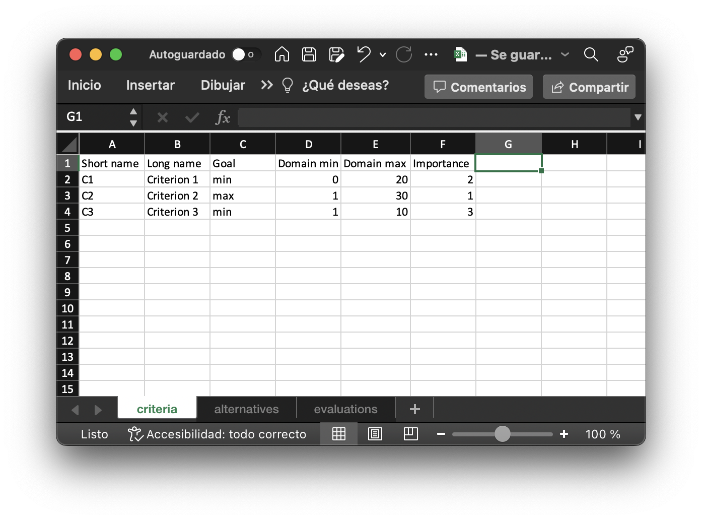
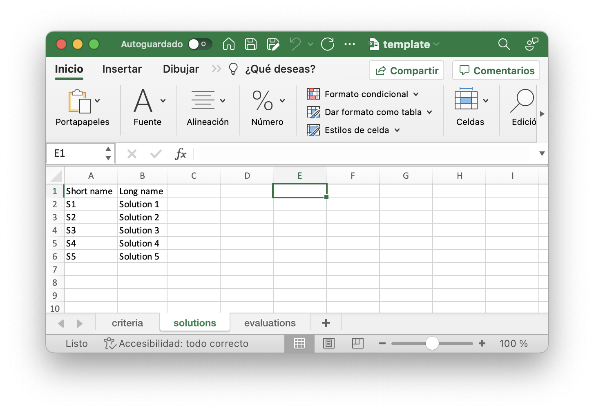
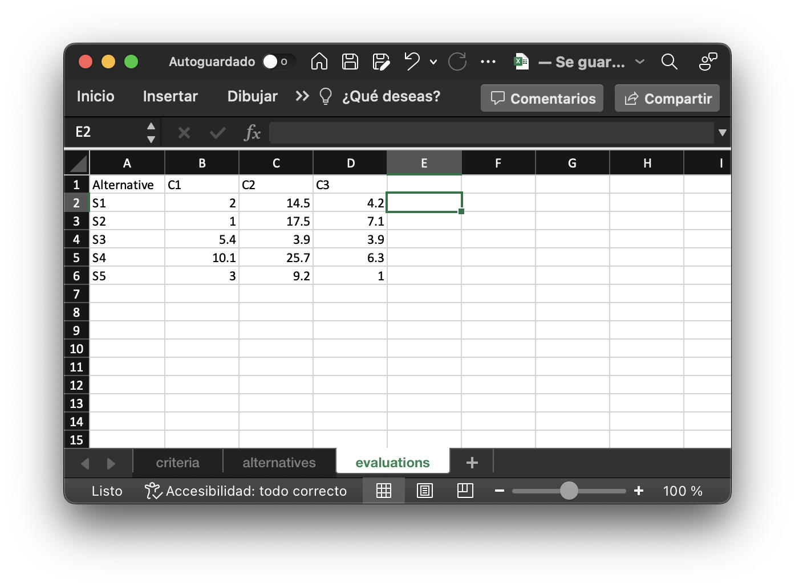

The main purpose of WIBApp is identify solutions of interest for a given multicriteria decision problem. As input, a Microsoft Excel or Libre/Open Office spreadsheet composed of three sheets is required. See the guidelines below.
The first sheet, called "criteria" should include the following for each criterion:
The following figure shows an example of how the criteria data should be entered in the spreadsheet.
Similarly, the solutions sheet should include the following for each solution:
The following figure shows how the solutions data should be entered in the spreadsheet.
Finally, the evaluations of each solution in each criterion should be entered as shown in the following figure:
To facilitate data entry it is advisable to download this template and edit it at your convenience. Please note that data or objects outside the ranges of the entries required by WIBApp may cause the process of reading the input file to result in an error. Another common error is to set long or invalid character names for the abbreviations (Short name) used to identify the criteria and solutions.
You can also download one of the following files which correspond to specific real-life scenarios. The first one, universities.xlsx contains information from the site RUR (Round University Ranking) in which technical universities around the world can be evaluated on the basis of four criteria. The second file tourism.xlsx corresponds to the evaluation of European tourist destinations (countries) in terms of their sustainability (see (Ozkaya & Demirhan, 2022)).
After downloading one of these files, just upload it as input to WIBApp in the "Data" option.